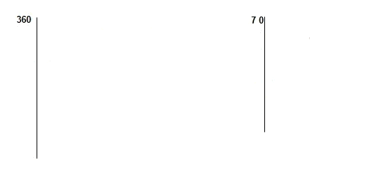
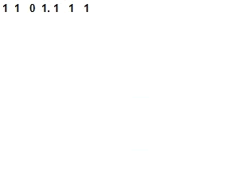
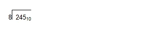
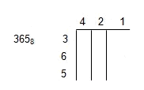
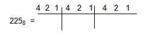
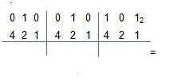
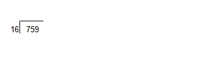
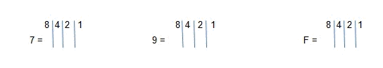

CONVERSION DE DECIMAL A BIMARIO
Para convertir de un decimal a binario, éste número se divide entre dos hasta que el cociente nos de cero; el residuo es el número binario, tomándolo de derecha a izquierda (en el sentido de la flecha).
Ejemplo.-
Convertir el número 7010 a binario.
El resultado es: 10001102
También podemos hacerlo de esta manera, en donde el último número es el primero, siguiendo la dirección de la flecha.
CONVERION DE BINARIO A DECIMAL
Cada número binario ocupa una posición, siempre en potencia de dos, cuándo nosotros convertimos de decimal a binario dividimos entre dos, para convertir de binario a decimal multiplicamos, es decir:
Trasformar 1101.1112 a su equivalente decimal
Valores de posición 23 22 21 20 2-1 2-2 2 -3
Números binarios
CONVERSION DE DECIMAL A OCTAL
Para convertir de decimal a octal se divide el número entre 8 hasta que el cociente sea cero, en donde el último residuo es el primer número y el primero es el último, por ejemplo:
Por lo tanto 24510 = 3658
CONVERSION DE OCTAL A BINARIO
El sistema octal ocupa tres posiciones, 4, 2, 1, sumados es igual a 7; si queremos convertir el 365 octal a binario.
por lo tanto 3658= 111101012
Otro ejemplo:
Nota: Los ceros se omiten, los unos se suman.
CONVERSION DE BINARIO A OCTAL
Para convertir un binario a octal de igual manera, se consideran las tres posiciones como se muestra en el siguiente ejemplo:
Tabla de Octales
En esta tabla los números que están en el extremo izquierdo y derecho de color rojo son decimales, los demás números son octales, por ejemplo el 8 decimal que está al extremo superior izquierdo es equivalente al 10 octal; el quince decimal que se encuentra en el extremo superior derecho es equivalente al 17 octal.
CONVERSION DE DECIMAL A HEXADECIMAL
El sistema hexadecimal va del 0 al 9 y del 10 al 15 se representan por medio de letras es decir que el 10 está representado por la A, el 11 por la B y así sucesivamente hasta llegar al 15. Para convertir de un número decimal a hexadecimal éste se divide entre 16.
Por ejemplo:
El 15 es igual a F entonces como en el caso de los binarios y los octales en los hexadecimales también los residuos de la división son el resultado, el último es el primero y el primero es el último quedando el resultado de la siguiente manera:
75910 = 2F716
174310 = 6CF16
3D816 = 98410
CONVERSION DE HEXADECIMAL A BINARIO
Al hexadecimal le corresponden cuatro posiciones 8, 4, 2, 1, que sumados es igual a 15.
Ejemplo:
79F16 = 011110011111
CONVERSION DE BINARIO A HEXADECIMAL
Ejemplo: 1010 1110 10112 = AEB16
Tabla de Hexadecimales
Esta es una tabla única, es decir, que con ella se podrán hacer todas las operaciones aritméticas, sumas, restas, multiplicaciones y divisiones; en los extremos izquierdo y derecho se encuentran los decimales, por ejemplo el número 240 decimal es igual F0 hexadecimal, 241 decimal es igual F1 hexadecimal, el 255 decimal es igual FF hexadecimal, se colocan los decimales de esta manera para facilitar el recorrido de los números ya sea de izquierda a derecha o viceversa.